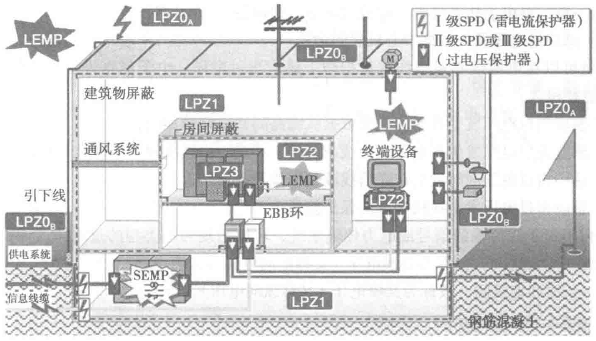

LPZ0A区可遭受直接雷击，电磁场强度没有衰减。LPZ0B区不会遭受直接雷击，电磁场强度也没有增减。LPZ1区内不但不会遭受直接雷击，而且电磁场强度将根据区内设备屏蔽措施的好坏而衰减。室内的电子信息设备位于LPZ1内，该区是不会遭受直接雷击的，电力馈线和与电信局相连的通信线由室外引入，跨越LPZ0B区。故数据中心只需防护感应雷和由电力线、通信线传导入室内的雷过电压。造成雷害的途径可能如下：
- 建筑物避雷设备引雷时，在建筑物避雷设备与接地装置间的引下线，或与避雷设备相连的建筑物钢筋上的大电流产生的电磁感应过电压，直接感应侵入处于LPZ1区或LPZ2区的计算机设备，或感应在LPZ1区、LPZ2区的垂直竖铜电缆和水平横电缆上，进而按电磁波传输规律，以行波方式侵入电子信息设备。
- 建筑物附近落雷、闪电电流产生的电磁场在周围电力线或通信线上感应的过电压、过电流，沿线路以行波方式侵入电子信息设备。
- 外引的电力线或通信线从LPZ0A区穿越LPZ0B区进入室内，在LPZ0A区的线路（包括架空线和埋地电缆）遭雷电直击时（可击在架空线上，也可击在埋地电缆周围的大地，击穿土壤进而侵入电缆线），进入线路的雷电经衰减后与感应过电压、过电流量级相同，以行波方式向电子信息设备传输。
- 由于新建的建筑物采用了接地网系统，建筑物避雷针用联合地网为接地体，它的存在增加了雷电直接击中建筑的概率，也使雷闪电流造成的地电位上升次数增加。在采用接地网系统的地网系统，地电位上升可使线路和地之间出现电位差，即所谓的地电位反击，损坏电子信息设备。
- 有天地对接的建筑物，卫星接收天线设置在大楼顶端，即LPZ0A区。接收天线可能遭受直接雷击，并经天线馈线传导入卫星小站设备。卫星接收天线和其他天线系统